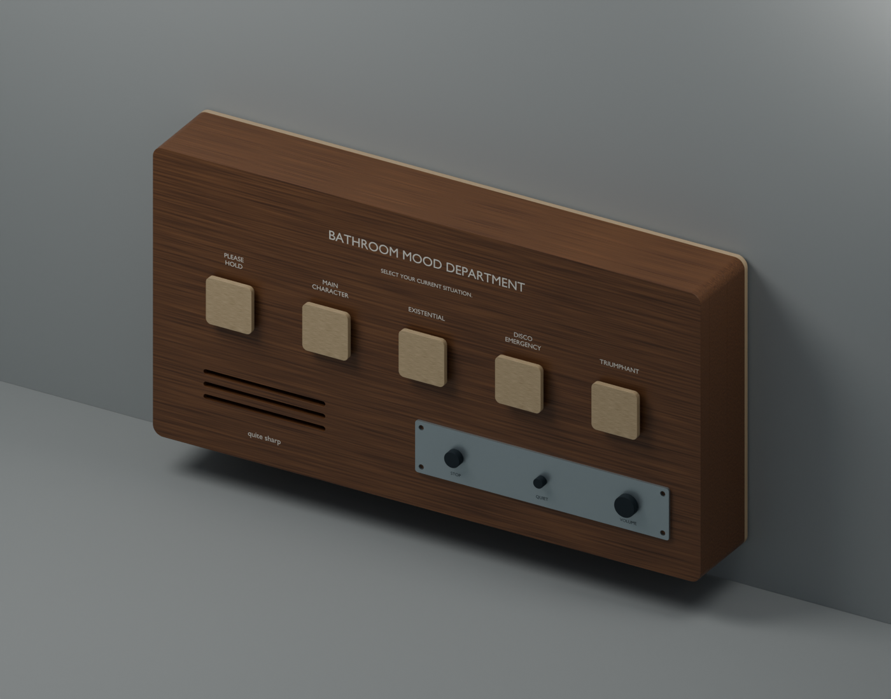

QUITE SHARP PRESENTS
quite weird.
Good wood. Odd intentions.
Three little departures from ordinary life.
Pick one. Have a look inside.

ASSEMBLED
Preparing the interactive model…
A CLOSER LOOK
The whole is lovely. So are the parts.
Drag to turn. Scroll or pinch to zoom. Hover over a piece—or tap it—to see what it does.
Three design studies, shared for a closer look. These models show the proposed construction; electronics and small hardware are simplified or omitted. They are not finished products or a complete assembly guide.